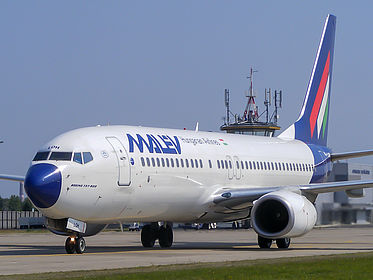
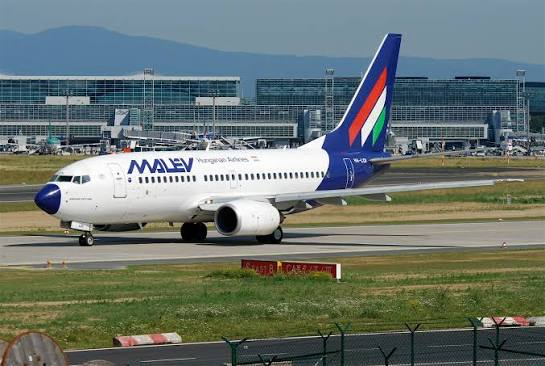
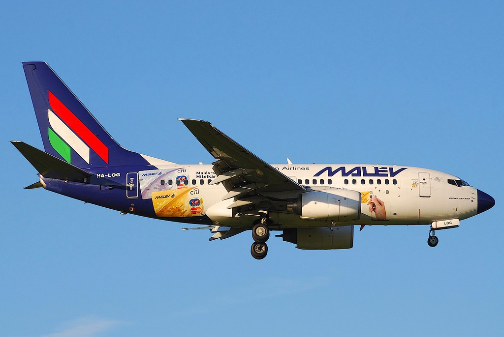
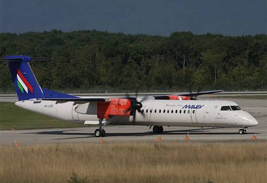
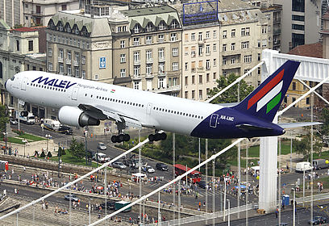
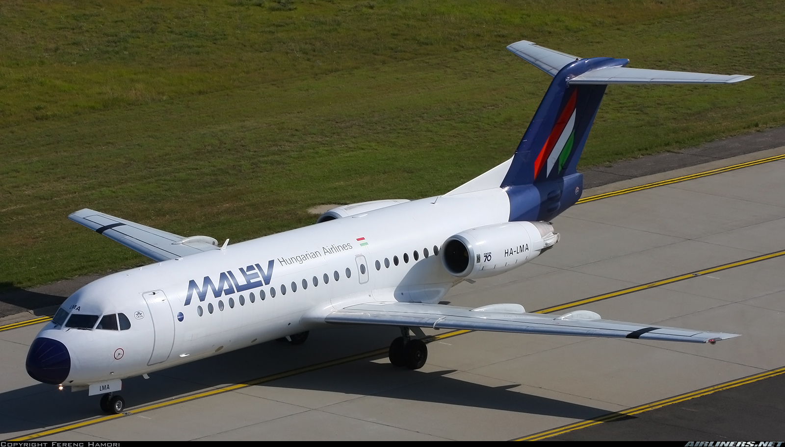
A Boeing 737-800-as flotta a Malév történetének legmodernebb, legnagyobb kapacitású
és egyben a
legintenzívebben használt gerinctípusa a rövid és középtávú útvonalakon.
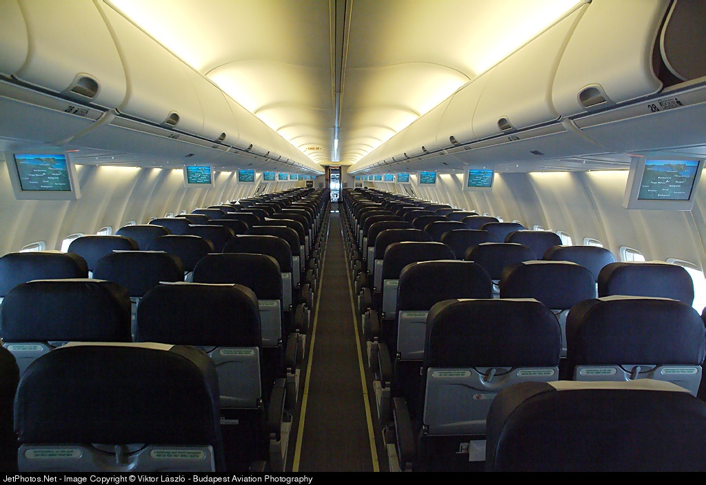
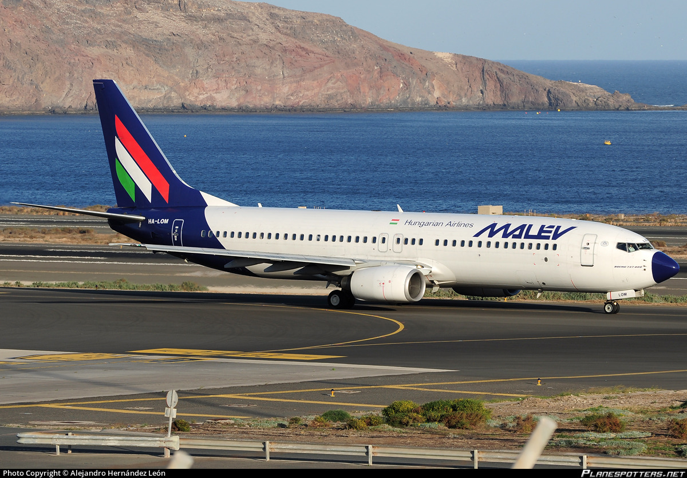
Hossz: 39,5 méter
Fesztáv: 35,79 méter
Hatótávolság: kb. 5 769 km
Max sebesség: 946 km/h
Férőhely: 168 utas (kétosztályos elrendezésben)
A Malév Hungarian Airlines 2003 januárjától vezette be a vadonatúj, Next Generation (NG) típusú Boeing 737-es család tagjait,
amelyek közül a Boeing 737-700-asok a flotta gerincét képzik
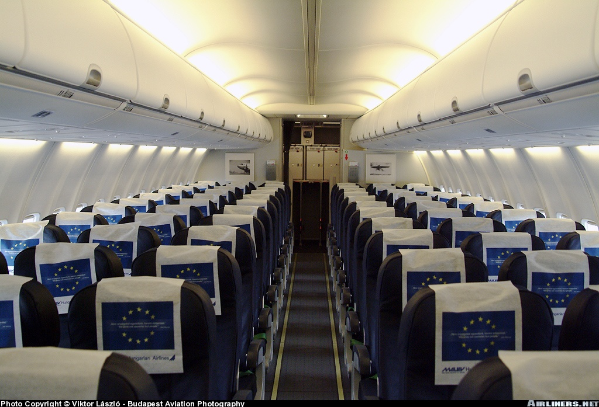
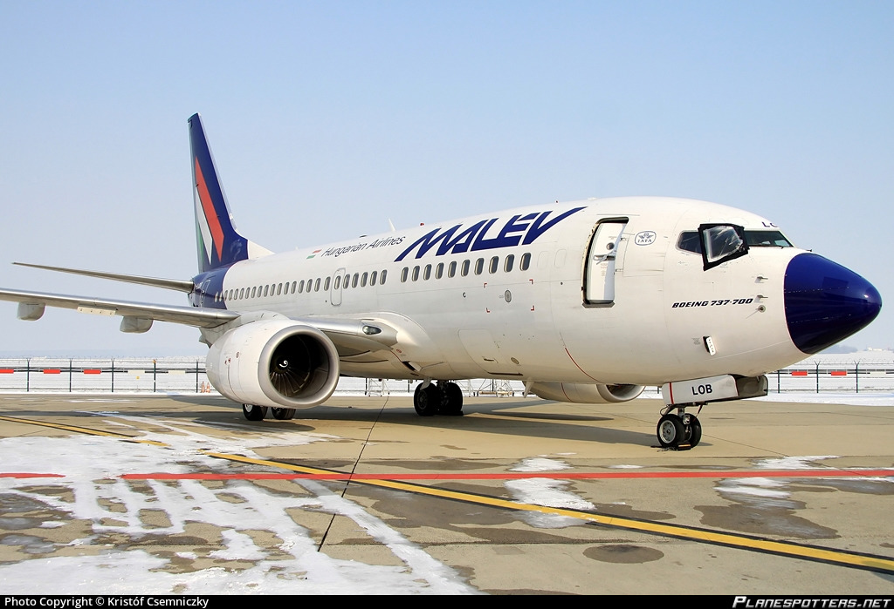
Hossz: 33,6 méter
Fesztáv: 34,3 méter
Hatótávolság: kb. 4 800 – 5 500 km
Max sebesség: Mach 0,82
Férőhely: 121-132 utas (kétosztályos elrendezésben)
A Boeing 737-600-as (737-6Q8/736) típus a Malév történetének egyik legkülönlegesebb és legmegosztóbb repülőgépe.
A 2003-as nagy flottafiatalítási program keretében érkezett a légitársasághoz International Lease Finance Corporation (ILFC) lízingkonstrukcióban,
a legkisebb befogadóképességű Next Generation (NG) variánsként. ("Zseb-Boeing")
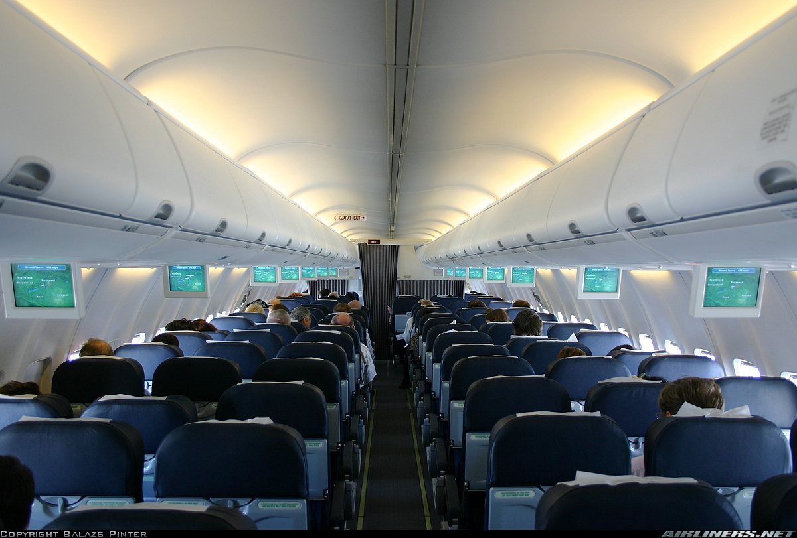
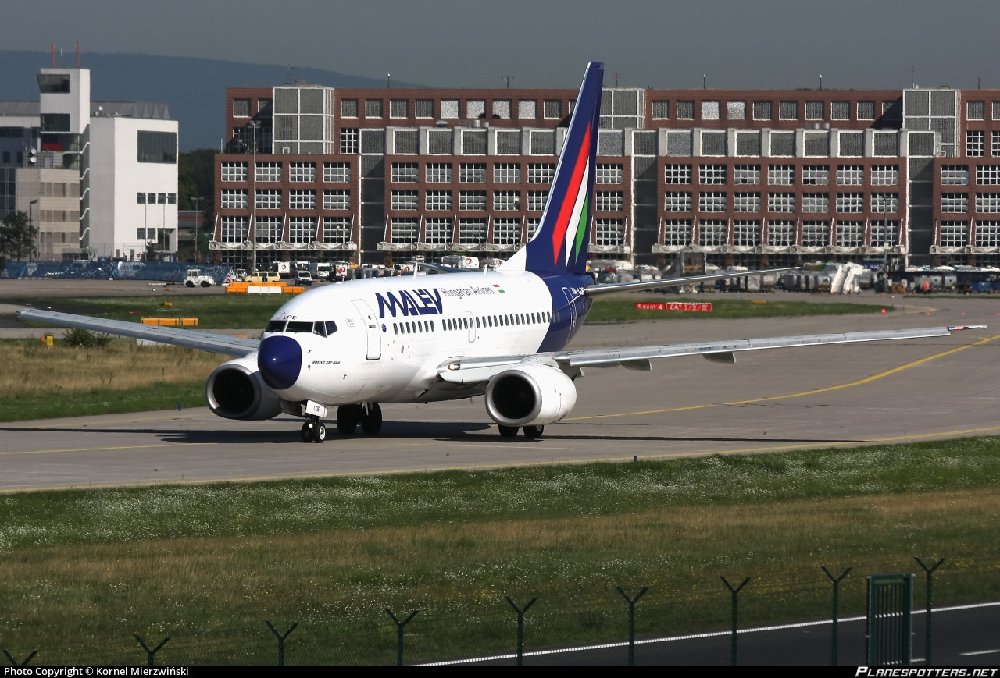
Hossz: 31,2 méter
Fesztáv: 34,3 méter
Hatótávolság: kb. 5 600 km
Max sebesség: Mach 0,82
Férőhely: 102-109 utas (kétosztályos elrendezésben)
A Bombardier Dash 8 Q400-as turbolégcsavaros repülőgépek bevezetése a Malév egyik legjelentősebb stratégiai és arculati lépése volt.
A típus 2008-as érkezésével a magyar nemzeti légitársaság hosszú idő után tért vissza a légcsavaros technológiához, modernizálva a regionális hálózatát
A Q400-as flotta legemlékezetesebb fejezete a HA-LQD lajstromú géphez köthető. 2011 februárjában, a Malév megalakulásának 65. évfordulója alkalmából ez a repülőgép
egyedülálló retro festést kapott
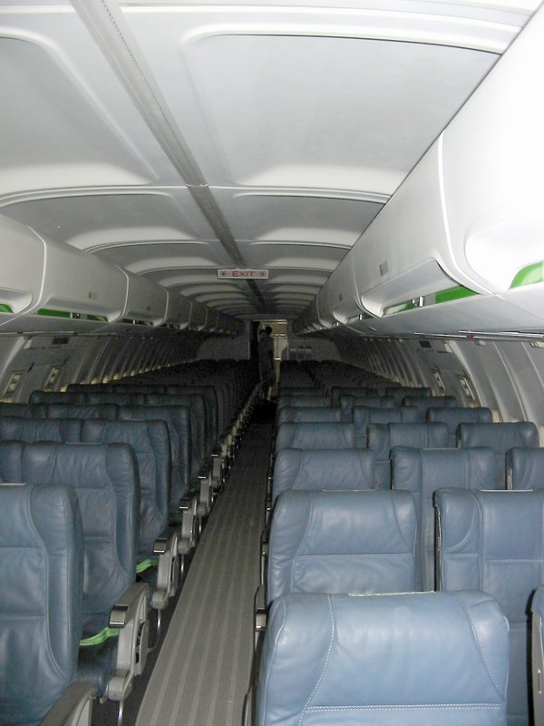
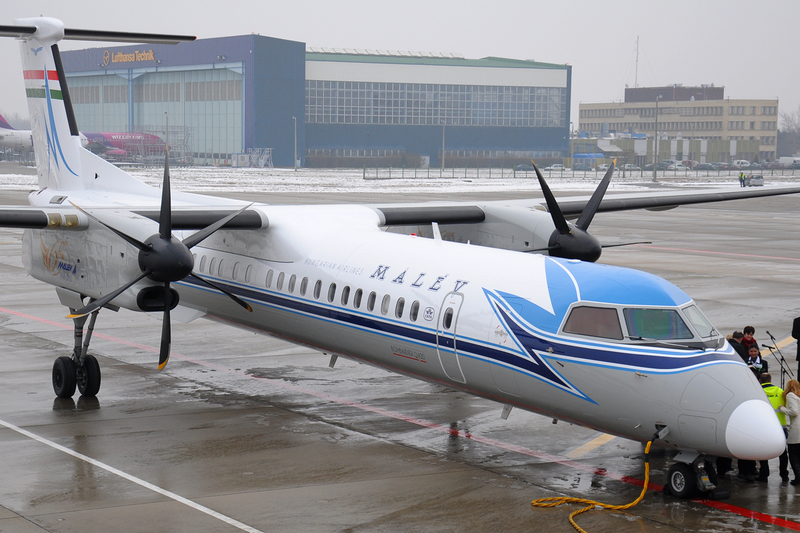
Hossz: 32,8 méter
Fesztáv: 28,4 méter
Hatótávolság: 2 400 – 2 500 km
Max sebesség: 667 km/h
Férőhely: 76 utas (egyosztályos elrendezésben)
A Boeing 767-300ER a Malév legnagyobb utasszállító repülőgépe. Bár a légitársaság hosszú távú tengerentúli útvonalait
a 90-es évektől alapvetően a rövidebb, gyári rendelésű 767-200ER modellek (a híres „Aladár” és „Béla”) határozták meg.
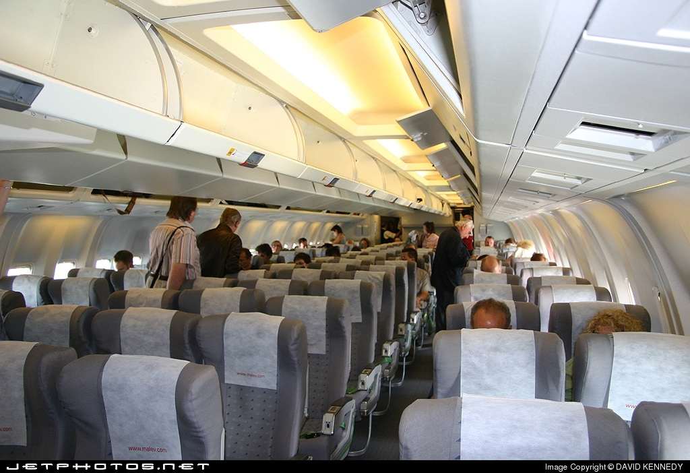
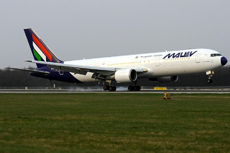
Hossz: 54,9 méter
Fesztáv: 47,6 méter
Hatótávolság: 10 200 km
Max sebesség: Mach 0,86
Férőhely: 229 utas (kétosztályos elrendezésben)
A Fokker 70-es (F70) a Malév egyik legsikeresebb és az utazóközönség által leginkább kedvelt regionális sugárhajtású repülőgépe.
Bevezetése fontos mérföldkövet jelentett, mivel ezzel a típussal kezdődött meg a rendkívül elavult, szovjet gyártmányú Tupoljev Tu-134-es flotta
leváltása és a nyugati technológiára való átállás a rövid távú útvonalakon
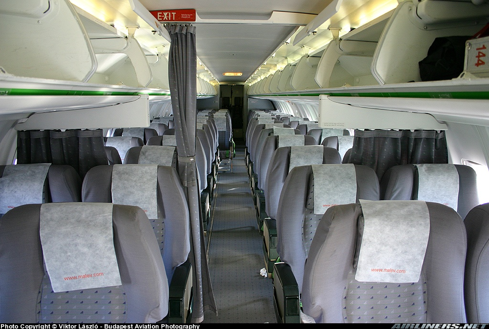
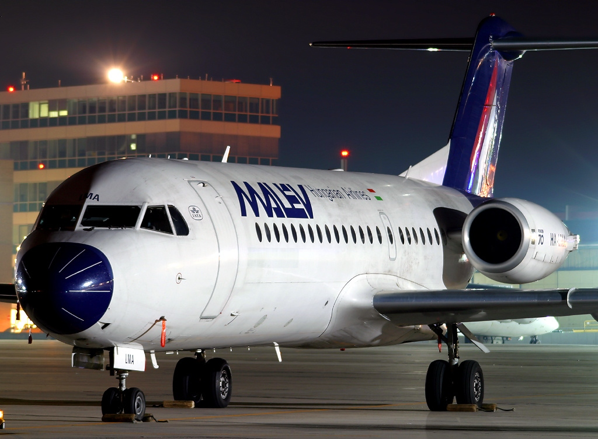
Hossz: 30,91 méter
Fesztáv: 28,08 méter
Hatótávolság: kb. 2 000 – 2 100 km
Max sebesség: Mach 0,77
Férőhely: 79-84 utas (egyosztályos elrendezésben)
A Liszunov Li-2-es a világ talán legsikeresebb repülőgépének, a Douglas DC-3-nak licensz alapján a Szovjetunióban gyártott változata. Az eredeti típus 1935. december 17-én repült először.
A világ egyetlen repülőképes Li-2-esét, az 18433209-es gyári számút 1949-ben gyártották a taskenti 84-es számú repülőgépgyárban. Elkészülte után még abban az évben Magyarországra érkezett; a Magyar Néphadseregnél helyezték üzembe. 1958-ban több társával együtt a Malévhoz került, és itt kapta meg polgári légialkalmassági bizonyítványát. A Goldtimer Alapítvány 1997-ben átszállította a gépet Szolnokról Budaörsre, ahol azóta a repülőtér megbecsült járműve: felújították és szinte teljesen újraépítették. Az utastér ülései a Malév valamelyik Tu-134-eséből származnak.
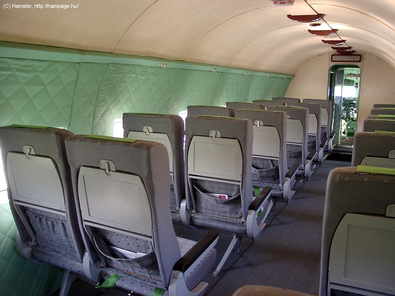
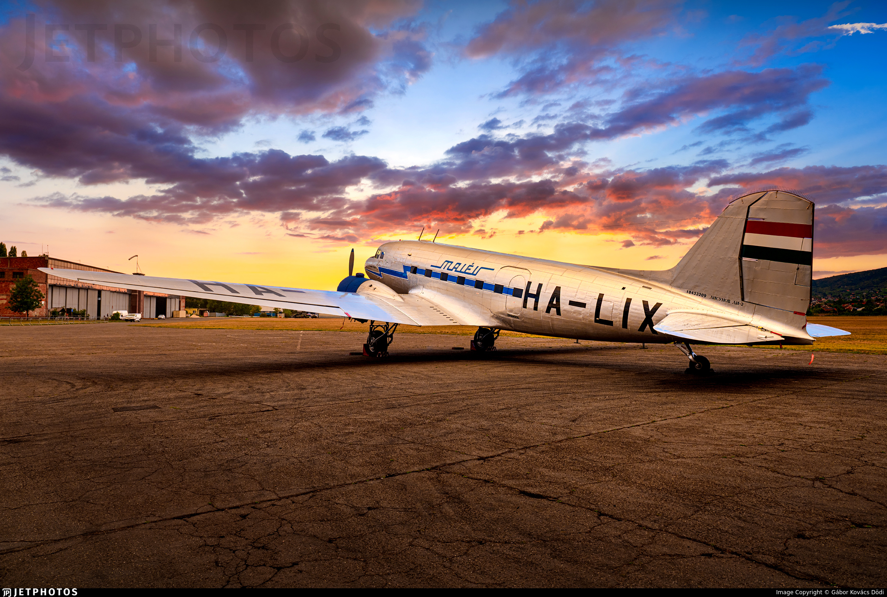
Hossz: 19,65 m
Fesztáv: 28,81 m
Hatótávolság: 2500 km
Max sebesség (1 km magasan): 316 km/h
Férőhely: 19 utas
A Tu-154-es minden idők egyik legismertebb és legnépszerűbb repülőgépe. 2018 pedig fontos repüléstörténeti évfordulókat hozott.
A Légiközlekedési Kulturális Központ nagy vállalkozásba kezdett akkor: visszakapta régi-új külsejét a Malév első Tu-154-ese, ami 53 évvel ezelőtt érkezett meg a légitársasághoz.
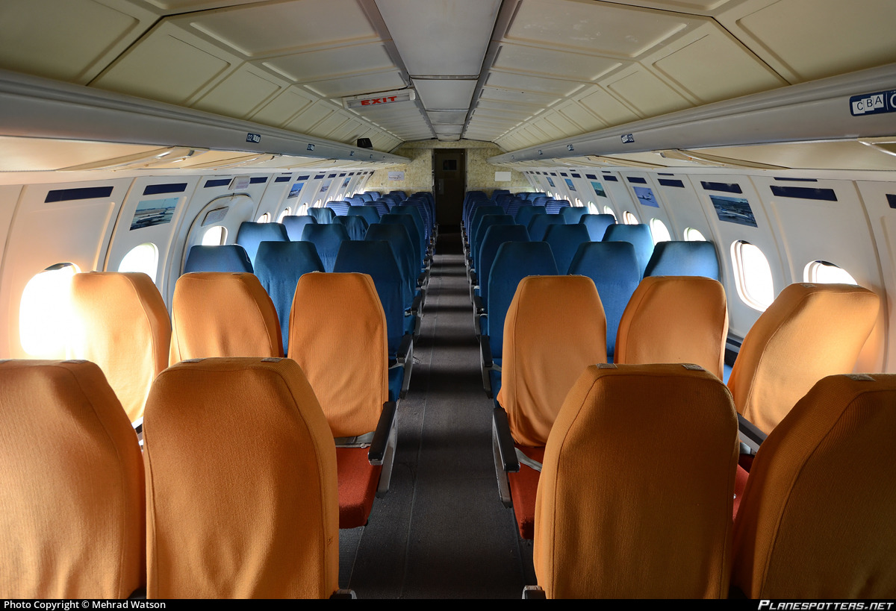
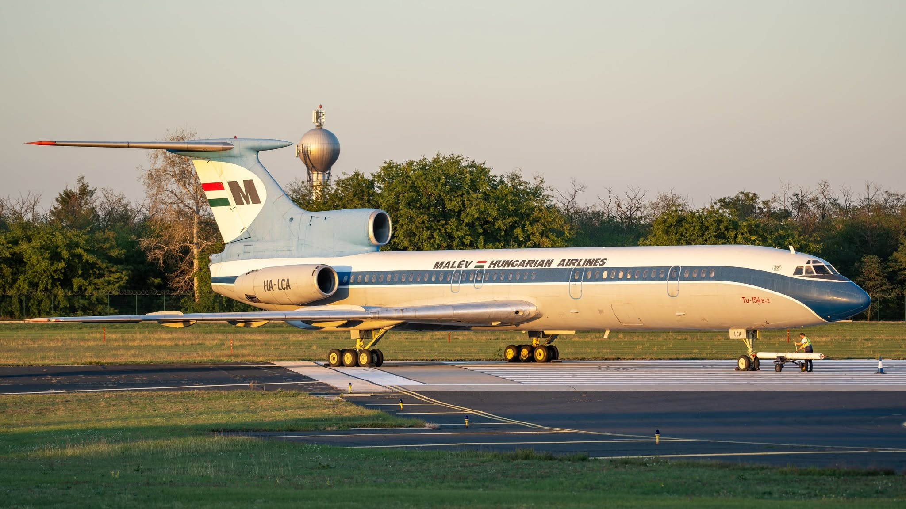
Hossz: 47,90 méter
Fesztáv: 37,55 méter
Hatótávolság: kb. 3 500 – 3 900 km
Max sebesség: Mach 0,88
Férőhely: 128 utas (kétosztályos elrendezésben)